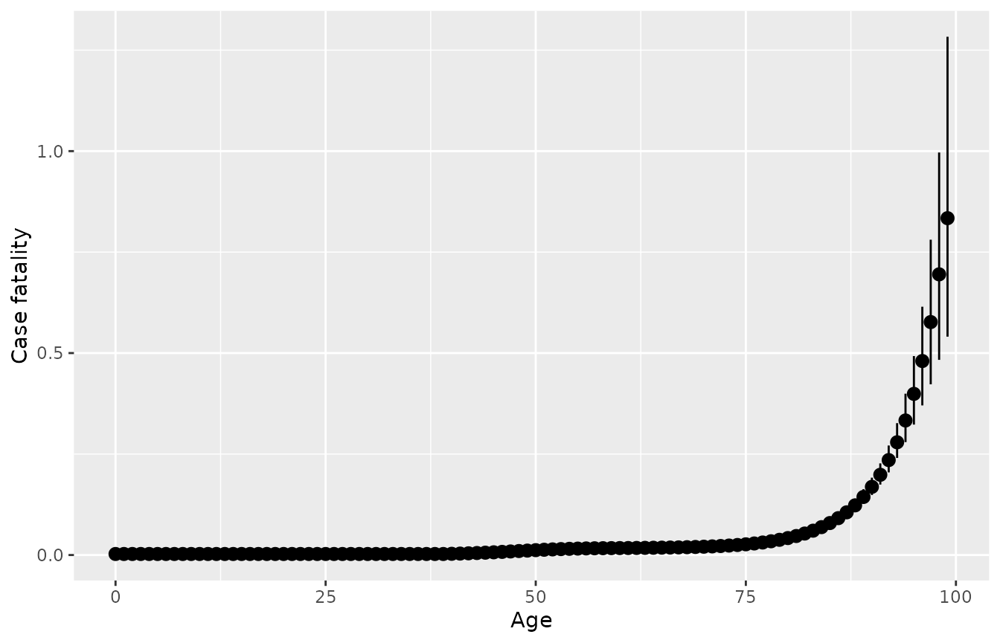

vignettes/disbayes.Rmd
disbayes.RmdThis document gives an introduction to the disbayes package for estimating rates of disease given indirect data. For example, we might want to
estimate case fatality rates, given mortality and prevalence and/or incidence data
estimate incidence rates, given prevalence and mortality data.
We might want to know these rates in order to build simulation models for estimating health impacts of interventions.
The document also serves to illustrate the general principles of likelihood and Bayesian inference for estimating disease rates given indirect data.
We represent a disease as a continuous-time, multi-state process with three states:
If we assume that mortality from other causes is independent of disease status, deaths from other causes are uninformative and can be ignored.
The disease process is then fully defined by the
disease incidence \(i(a)\), and the
case fatality rate \(f(a)\),
which are both assumed to depend on age \(a\). Remission is also possible for some diseases, with rate \(r(a)\). Assume further that the rates are constant within integer years of age \(a\), so they can be written \(i_a\), \(f_a\).
From these, we can determine the transition probability matrix \(P_a\), whose \(r,s\) entry \(P_{ars}\) is the probability that a person is in state \(s\) at age \(a+1\) given they are in state \(r\) at age \(a\). The matrix \(P_a\) is defined as a function of \(i_a\) and \(f_a\), which is the solution to a differential equation, and is written out explicitly in the DisMod II paper (Barendregt et al. (2003)).
Further, let \(S_a\) be the “state occupancy probabilities”, or the proportion of individuals in a hypothetical birth cohort (of infinite size) who are in each state at age \(a\). This is a row vector with three elements \(S_{ar}\), one for each state \(r\). Assume everyone is disease-free at age 0. The state occupancy probabilities at each subsequent age \(a+1\) are then determined by mutiplying by the transition probability matrix:
\[ S_{a+1} = S_a P_a \]
The prevalence of disease (among people who are alive) at each age \(a\) is then obtained as \(pr_a = S_{a2} / (S_{a1} + S_{a2})\).
The disease-specific mortality rate at age \(a\), or the probability that a person alive at age \(a\) dies from the disease before age \(a+1\), can also be expressed in terms of the disease prevalence at age \(a\) and the transition probabilities between ages \(a\) and \(a+1\), as
\[ dm_a = P_{a23} pr_a + P_{a13} (1 - pr_a) \]
Data are observed which give information about some, but not all, of the parameters in the theoretical disease model. The form of the data available may be different in each application. We then wish to estimate any remaining unknown parameters. The Bayesian approach to estimating these unknowns can be described as four steps:
write down a theoretical model for underlying disease progression (as done above)
write down a statistical model for the observed data given the parameters of the underlying disease model. In this model, observed data need to be expressed as counts of individuals and associated denominators, e.g.
(incidence): given a population of size \(n_a^{(mort)}\), \(r_a^{(inc)}\) of these are observed to get the disease within the next year
(mortality): given a population of size \(n_a^{(mort)}\) (with or without the disease), \(r_a^{(mort)}\) of these are observed to die from the disease within the next year
(prevalence): from a sample of \(n_a^{(prev)}\) individuals, \(r_a^{(prev)}\) are known to have the disease at age \(a\) (and \(n_a^{(prev)} - r_a^{(prev)}\) are known to not have the disease
(remission): from a sample of \(n_a^{(rem)}\) individuals, \(r_a^{(rem)}\) are known to recover from the disease in the following year.
The next section discusses how these data can be derived, given the typical forms of data available from burden of disease studies. The data are expressed as numerators and denominators, rather than simply point estimates of rates, so that formal statistical methods (likelihood and Bayesian inference) can be used. The denominator is related to the uncertainty around the estimate, e.g. lower denominators imply that the estimate was obtained from observing the disease outcome of a smaller sample of people, hence there is more uncertainty.
write down prior distributions for the unknowns. These may express prior ignorance, as in the example below.
compute the (unique) posterior distribution of the unknown parameters in the joint model, given the observed data.
This approach is used in the DisMod-MR package, as explained by Flaxman, Vos, and Murray (2015), however the software itself is not fully documented. The older (published) DisMod II (Barendregt et al. (2003)) used an ad-hoc optimisation approach to estimate parameters.
Advantages of the Bayesian method, as implemented in disbayes, include
uncertainty about any quantity is quantified automatically through the posterior distribution, given the data, model assumptions and prior distributions supplied.
the ease of including multiple sources of direct/indirect data. This is enabled by the generic computational methods and available software for Bayesian modelling, specifically the Stan package, illustrated below. This allows the approach to generalise to settings with different forms of data available. Currently implemented models include hierarchical models, models with additive area and gender effects, and models with age-specific time trends. In contrast, DisMod II only allows limited forms of data.
The following data are given in the R data frame ihdengland supplied in the package.
inc_num,inc_denom: incidence of IHD by age
mort_num,mort_denom: estimates of IHD-specific mortality by age
prev_num,prev_denom: estimates of prevalence by age
and we wish to estimate case fatality by age, given these inputs. A selection of rows from the full data frame are shown here. We select only the data from one area and gender (Bristol, male) for this illustration. Remission rates are assumed to be zero, hence remission data are not included.
library(disbayes)
library(dplyr,quietly = TRUE)
ihdbristol <- ihdengland %>% filter(area=="Bristol", gender=="Male")
ihdbristol %>% filter(between(age, 50, 55))## # A tibble: 6 × 9
## age gender area inc_num inc_denom prev_num prev_denom mort_num mort_denom
## <dbl> <chr> <fct> <dbl> <dbl> <dbl> <dbl> <dbl> <dbl>
## 1 50 Male Bristol 28 8326 142 5810 4 7817
## 2 51 Male Bristol 32 8294 140 5041 4 7771
## 3 52 Male Bristol 32 7934 140 4433 4 7664
## 4 53 Male Bristol 30 7245 144 3985 5 7498
## 5 54 Male Bristol 28 6223 150 3699 5 7274
## 6 55 Male Bristol 23 4874 158 3574 5 6990These data were obtained from the Global Burden of Disease, 2017, and transformed in three ways to obtain the data seen here.
Firstly, the published point estimates and confidence intervals for each annual risk probability were converted to an implicit numerator and denominator. This is done by assuming that
the incidence has been estimated as \(r_a^{(inc)}/n_a^{(inc)}\), where out of \(n_a^{(inc)}\) people who are alive at age \(a\), \(r_a^{(inc)}\) of these get IHD before age \(a+1\).
the mortality has been estimated as \(r_a^{(mort)}/n_a^{(mort)}\), where out of \(n_a^{(mort)}\) people who are alive at age \(a\), \(r_a^{(mort)}\) of these die of IHD before age \(a+1\). These ratios are estimates of the true, underlying disease-specific mortalities \(dm_a\).
the prevalence has been estimated as \(r_a^{(prev)}/n_a^{(prev)}\), where out of \(n_a^{(prev)}\) people who are alive at age \(a\), \(r_a^{(prev)}\) of them have IHD.
The published estimates and uncertainty interval are then used to derive the implicit denominator and numerator, using the method described in the next subsection.
Secondly, estimates for five-year age groups were converted to one-year groups. Most simply this could be done by assuming the counts are equal for each year of age, but a more sophisticated method was used based on “temporal disaggregation” using one of the methods implemented by Sax and Steiner in the tempdisagg R package (Sax and Steiner (2013)). This ensures that the disaggregated counts vary smoothly with age, while preserving the aggregate totals.
Thirdly, counts from smaller geographical areas were simply added up to obtain the corresponding counts for the larger areas (English city regions) required in this analysis.
ihdbristol[ihdbristol$age %in% 50:55, ]## # A tibble: 6 × 9
## age gender area inc_num inc_denom prev_num prev_denom mort_num mort_denom
## <dbl> <chr> <fct> <dbl> <dbl> <dbl> <dbl> <dbl> <dbl>
## 1 50 Male Bristol 28 8326 142 5810 4 7817
## 2 51 Male Bristol 32 8294 140 5041 4 7771
## 3 52 Male Bristol 32 7934 140 4433 4 7664
## 4 53 Male Bristol 30 7245 144 3985 5 7498
## 5 54 Male Bristol 28 6223 150 3699 5 7274
## 6 55 Male Bristol 23 4874 158 3574 5 6990As an aside, here we show how the temporal disaggregation procedure is done in R. We have a disease count outcome that is measured for 5-year age groups, as in the following data frame.
dat <- data.frame(agefrom=seq(0,20,5), ageto=seq(4,24,5),
measure=c(15,20,24,35,29))
dat## agefrom ageto measure
## 1 0 4 15
## 2 5 9 20
## 3 10 14 24
## 4 15 19 35
## 5 20 24 29The following code shows how to produce a smoothly disaggregated version of this count, and compares the smooth disaggregation to a crude disaggregation where the 5-year counts are simply divided by 5 to estimate one-year counts. We can check that the smoothly-disaggregated measures add up to the original data that were provided for the 5-year age groups.
if (requireNamespace("tempdisagg")) {
disagg_crude <- rep(dat$measure/5, each=5)
disagg_smooth <- predict(tempdisagg::td(dat$measure ~ 1, to=5, method="fast"))
ageyr <- 0:24
plot(ageyr, disagg_crude, type="l", xlab="Age", ylab="Measure", ylim=c(0,8))
lines(ageyr, disagg_smooth, col="blue")
agegroup <- cut(ageyr, seq(0,25,5), right = FALSE)
tapply(disagg_smooth, agegroup, sum)
}## Loading required namespace: tempdisagg## [0,5) [5,10) [10,15) [15,20) [20,25)
## 15 20 24 35 29See the documentation for the tempdisagg package, including the vignettes and the help page for the td function in this package, for more information about smooth temporal disaggregation. It is unclear how far the method generalises, e.g. to intervals of varying lengths.
Sometimes a point estimate \(\hat{p}\) for a quantity such as incidence is published alongside an (e.g. 95%) interval estimate \((\hat{p}^{(lower)},\hat{p}^{(upper)})\). The interval estimate can be assumed to express the uncertainty associated with the estimate. Such information can be converted to an implicit numerator \(r\) and denominator \(n\) as follows. We assume the point and interval estimate are summaries of a Beta posterior distribution which has been obtained by combining a vague prior with an observation of \(r\) events occurring out of a sample of \(n\) individuals. If a Beta(0,0) prior is used, then the posterior is known to be Beta(r, n-r). We can then search for the best-fitting Beta(r,n-r)$ distribution which has median \(\hat{p}\) and (2.5,97.5) quantiles \((\hat{p}^{(lower)},\hat{p}^{(upper)})\), and set \(r=a, n=a+b\). A utility to perform this search is provided in the SHELF package for expert elicitation (O’Hagan et al. (2006)).
In other applications, the denominators might be directly available, e.g. we might know that the prevalence was estimated from a survey of \(r_a^{(prev)}\) people, or we might assume that the incidence and mortality were obtained from a comprehensive registry of the population, in which case the denominator would equal the population size (within the specific stratum, e.g. as defined by age and gender, that the estimate refers to).
The uncertainty inherent in the information supplied about each of incidence, prevalence and mortality is measured by the denominator. In the example above, this is equated to the size of the population used to produce the estimate. However, if we also suspected that one of the data sources may be biased, but were unsure about the direction of bias, we could downweight that data source by multiplying both the numerator and denominator by the same amount, e.g. 0.5 if we wanted to give a data source half its original weight. Note that if counts are scaled in this way, they should then be rounded to the nearest integer.
The four steps of the Bayesian modelling process are then implemented as follows:
write down the theoretical disease model, as given above
write down the statistical model for the data. All count data are assumed to arise from a Binomial distribution with the corresponding denominator, and a probability parameter which is a function of the parameters in the theoretical disease model.
(incidence) \(r_a^{(inc)} \sim ~ Binomial(n_a, 1 - P_{a11})\), where \(P_{a11}\) is the annual probability of remaining free of the disease.
(mortality) \(r_a^{(mort)} \sim ~ Binomial(n_a, dm_a)\), where the disease-specific mortality \(dm_a\) is a deterministic function of the incidences and case fatalities \(\{i_j,f_j\}\) for ages \(j\) up to \(a\), as described in the theoretical disease model.
(prevalence) \(r_a^{(prev)} \sim ~ Binomial(n_a^{(prev)}, pr_a)\), where \(pr_a\) is the true prevalence, defined as a deterministic function of the incidences and case fatalities.
(remission, if assumed possible) \(r_a^{(rem)} \sim ~ Binomial(n_a^{(rem)}, P_{a21})\), where \(P_{a21}\) is the probability that someone with the disease will have recovered from the disease one year from now, defined as a deterministic function of the remission rates, case fatalities and incidences.
define prior distributions for the unknown parameters, as explained in the next section.
compute the posterior distribution \(p(\theta | \mathbf{y})\) for parameters \(\theta = \{i_a,f_a\}\) given data \(\mathbf{y} = \{i_a, r_a, n_a\}\)
In example such as this one, where latent quantities are estimated from indirect data, it is important to consider what substantive prior information is available about the unknown quantities, and what influence the assumed prior has on the resulting estimates.
In these examples, the case fatality is only informed indirectly. The disbayes package implements alternative models for how case fatality depends on age. The same methods can be used for how incidence depends on age.
the case fatality rate \(f_a\) for each year of age \(a\) is assumed to have an independent vague prior distribution.
the case fatality rate is assumed to be a smooth function \(g()\) of age, \(f_a = g(a)\). This smooth function is defined by a spline basis \(log(f_a) = \sum_k \beta_k g_k(a)\), where \(g_k()\) are basis functions. A “thin plate” spline is used, following the default in the mgcv R package (Wood), and the amount of smoothness is determined automatically through a hierarchical prior on the coefficients.
the case fatality rate is a smoothly increasing function of age.
the case fatality rate is constant with age.
In addition, for all ages below a given cut-off age \(a_{base}\), case fatalities are assumed to be equal to a constant \(f_{base}\). This cut-off age \(a_{base}\) needs to be supplied when calling the disbayes function. \(f_{base}\) does not need to be supplied however, and is estimated from the data under the assumption that the dependence on age is a smooth function.
Model (2) is more realistic. However it may not give sensible estimates if the information provided by the data is too weak. The results of fitting Model (1) can help to diagnose where the indirect information on case fatality provided by the rest of the data is weaker or stronger. If the information on \(f_a\) for a particular age is too weak, then the posterior distribution will be identical to the prior. In those cases, substantive prior information about case fatality at that age is necessary for the estimates to be meaningful.
This information might come from nearby ages that are better-informed, through extrapolation from the smoothing model. However extrapolating in this way is only feasible for a limited time span (perhaps around 10-20 years) before stronger assumptions are necessary, e.g. that case fatality is constant below a certain age.
The increasing model (3) may be required in cases where the data alone are not sufficient to identify an increasing shape with age. A constant model (4) may be necessary if the data on age variations are very weak, or simply if this model is thought to be plausible.
Alternative models of how the rates depend on age are also supported for incidence and remission rates.
The disbayes software works by calling the Stan software (mc-stan.org) that allows any Bayesian model to be written down in the Stan language, and enables the unknown parameters to be estimated through two alternative methods:
method="opt" (the default). Optimisation is used to find the mode of the posterior distribution, which gives a point estimate for the parameters. An approximate sample from the posterior is then drawn using a normal approximation around the posterior mode. This sample is summarised to give credible intervals.
method="mcmc". A sample from the posterior is drawn using Markov Chain Monte Carlo sampling, which is summarised to give a point estimate (median) and credible intervals. This is slower (typically taking a few minutes) but gives a more accurate characterisation of uncertainty.
The disbayes package uses Stan to fit the Bayesian disease model given here to the data \(\mathbf{y} = \{i_a, r_a, n_a\}\) supplied in the ihdbristol data frame. The R function disbayes does the work of converting the data to the required format for Stan, and calling the Stan software to run the simulations.
An overview of using the disbayes function is given here, but see the help page for disbayes for full information about the options of the function.
The disbayes function requires at least the following arguments
data: a data frame where all the variables are stored
additional arguments indicating which columns of the data contain which variables.
The required variables include at least information about incidence and mortality, optionally information about prevalence, and some indication of uncertainty around this information. This information can be supplied in three alternative ways. For example (using incidence as an example):
numerator and denominator, through arguments inc_num and inc_denom. This is what is done in the example here.
risk probability estimate with denominator: through arguments inc_prob and inc_denom. The numerator is computed automatically, by multiplying the denominator by the risk estimate. Note these refer to annual probabilities of having an event, not rates.
risk probability estimate with lower and upper 95% credible limits, through arguments inc_prob, inc_lower and inc_upper. The numerator and denominator are computed automatically, as described above.
The value given for the argument is a character string identifying the corresponding variable in the data. For mortality, prevalence and remission, arguments with names beginning mort, prev and rem are supplied in the same manner.
If remission data are omitted, it is assumed that there is no remission from the disease. If remission data are included, it is assumed that remission is possible and remission rates are estimated from the data.
disbayes: optimisation methodThe following call to the disbayes function is then made to fit the model to the ihdbristol data. The argument eqage=40 defines an assumption that case fatality is constant for all ages below 40.
dbres <- disbayes(data = ihdbristol, age = "age",
inc_num = "inc_num", inc_denom = "inc_denom",
prev_num = "prev_num", prev_denom = "prev_denom",
mort_num = "mort_num", mort_denom = "mort_denom",
eqage = 40)For comparison, we also fit an “unsmoothed” version of this model where the age-specific case fatality rates have independent priors, rather than being related through a spline function. This is specified with cf_model="indep".
dbresu <- disbayes(data = ihdbristol, age = "age",
inc_num = "inc_num", inc_denom = "inc_denom",
prev_num = "prev_num", prev_denom = "prev_denom",
mort_num = "mort_num", mort_denom = "mort_denom",
cf_model = "indep",
eqage = 40)The optimisation method produces accurate point estimates (defined by the posterior mode), and approximate credible intervals.
Occasionally the optimisation may produce an error message that mentions chol(H), but still produce a point estimate. This indicates that the level of uncertainty cannot be determined, and casts doubt on the validity of the point estimate. In these cases it may work if the model is simplified, e.g. by fixing the level of smoothness for the age-dependence of the rates by using the hp_fixed option to disbayes
disbayes: MCMC methodIf more accurate credible intervals are desired, then MCMC sampling can be used instead by setting method="mcmc", as follows. This is more computationally intensive, typically taking a few minutes per fit for the standard disbayes model.
options(mc.cores = parallel::detectCores())
dbresm <- disbayes(data = ihdbristol, age = "age",
inc_num = "inc_num", inc_denom = "inc_denom",
prev_num = "prev_num", prev_denom = "prev_denom",
mort_num = "mort_num", mort_denom = "mort_denom",
method="mcmc", chains=2, iter=1000,
eqage = 40)The sampling by rstan can be controlled, e.g. by setting the number of chains to run (perhaps on parallel cores) and the number of iterations - see help(disbayes) and the Stan documentation for full details. The number of iterations iter should be high enough that the results are not affected by Monte Carlo error.
After using MCMC, we should check that the sampler has converged, by examining the “trace plot” of the simulation progress for selected parameters. The simulated chains should mix together and look like white noise. Also if the disbayes call resulted in many reports of “divergent transitions”, then the chains are unlikely to have converged to a valid posterior. If convergence hasn’t occurred, then the model probably needs to be simplified (e.g. by increasing eqage, or fixing the degree of smoothness using hp_fixed), or the data are insufficient.
The disbayes function returns a list, with components that depend on what estimation method was used. For method="opt" this list has a component fit containing the estimates and draws from the posterior approximation, as returned by the function optimizing in the rstan package. For method="mcmc", this list has a component fit which is an object in the stanfit format defined by the rstan R interface to Stan. See help(disbayes) for further details of the returned object. Usually you will not need to deal with this list.
Instead, the parameter estimates can be easily extracted from a disbayes object using the tidy method. This works whatever optimisation method is used. The point estimates (modes or posterior medians) 95% credible intervals and other quantiles for all parameters of interest are arranged in a data frame, with the variables indicated in the variable called var. Variables include inc (incidence), cf (case fatality), mort (mortality), prev (prevalence), each indexed by year of age given in the age variable.
summ <- tidy(dbres) To extract results for a specific variable and model, it is convenient to use standard tidyverse functions, e.g. to get the median and interquartile range of case fatality for people aged between 60 and 65:
library(dplyr,quietly=TRUE)
summ %>%
filter(var=="cf", between(age,60,65)) %>%
select(age, `25%`, `50%`, `75%`)## age 25% 50% 75%
## 1 60 0.01631057 0.01746192 0.01875314
## 2 61 0.01654877 0.01757953 0.01881338
## 3 62 0.01668967 0.01771571 0.01893124
## 4 63 0.01685085 0.01786752 0.01902847
## 5 64 0.01704409 0.01802823 0.01914614
## 6 65 0.01725275 0.01826768 0.01938539The default plot method for objects returned by disbayes plots the posterior summaries for case fatality, allowing a quick check of the model results. Or do plot(..., variable="inc") for incidence. The function returns a ggplot2 object that can be modified with ggplot2 functions, e.g. to add axis labels.

More flexible plots can be built by using ggplot directly on the tidied estimates. The following shows the estimates of case fatality from the unsmoothed model in blue, with the estimates from the smoothed model superimposed in black.
summs <- summ %>% filter(var=="cf")
summu <- tidy(dbresu) %>% filter(var=="cf")
ggplot(summu, aes(x=age)) +
geom_pointrange(aes(y=`50%`, ymin=`2.5%`, ymax=`97.5%`),
data=summu, col="blue", alpha=0.5) +
geom_pointrange(aes(y=`50%`, ymin=`2.5%`, ymax=`97.5%`),
data=summ, col="black", alpha=0.5)Under the unsmoothed model, there is no information about case fatality in the youngest ages, hence the estimates are being drawn from the vague prior distribution that take values between about 0 and 60. The smoothed model gives more useful estimates, aided by the assumption that case fatalities are similar between similar ages, and that case fatality is constant under the age of 40, though the wide y-axis limits in this particular plot obscure the estimates of between-age variability from the smoothed model.
disbayes
Full documentation is given in help(disbayes). Some more useful options include
cf_model. Model for how case fatality varies with age. As well as the default spline smooth model and unsmoothed models illustrated above, cf_model="increasing" fits a model where case fatality is restricted to increase with age, and cf_model="const" specifies a constant case fatality with age.
inc_model. By default, incidence rates are smoothed as a function of age using a spline, as with case fatality rates. inc_model="indep" estimates independent incidence rates for each age.
rem_model. If no remission data are supplied, then the disease is assumed to have zero remission rate. If remission data are supplied, then remission rates are estimated. By default, these are assumed to be a constant function of age (rem_model="const"). To estimate independent remission rates for each age, supply rem_model="indep". To model remission rates as a smooth spline function of age, use rem_model="smooth".
hp_fixed. A list of “hyperparameters” to fix at constant values. If using smooth spline functions, this option may be required if the appropriate level of smoothness for the spline cannot be determined from the data. When using the default optimisation method, this can lead to an error message mentioning "Error in chol.default(-H)". In these cases, the smoothness can be fixed in advance, e.g. hp_fixed = list(scf=1) to fix the case fatality smoothness parameter to a typical value of 1. Lower values give more smoothness, higher values give wigglier curves. You may need to experiment with different values to determine what gives a plausible degree of smoothness.
The disbayes package provides a selection of more advanced models for more complex data structures. These are substantially more computationally intensive than the basic model shown in this vignette. For applications similar to the one shown here, using MCMC will typically take over an hour, while using optimisation will take a minute or less. Further information about how they are defined mathematically will be given in a forthcoming paper. See the R help pages for further information on how to invoke the functions.
disbayes_hier is used to fit a joint model for data from multiple areas.
disbayes_hier can also be used to fit a joint model for data from multiple areas and different genders. It is assumed that the relative case fatality between women and men is the same for each area. While this is labelled gender it can be used for any single binary predictor, though for chronic diseases, we will usually want to consider the effect of gender.
disbayes can include information about trends through calendar time, which can be age dependent. The ratio of incidence between previous years and the current year (the one represented by the data) can be supplied as a matrix, with one row per year of age and one column per calendar year. See the disbayes, arguments inc_trend and cf_trend.
Barendregt, J. J., G. J. Van Oortmarssen, T. Vos, and C. J. L. Murray. 2003. “A generic model for the assessment of disease epidemiology: the computational basis of DisMod II.” Population Health Metrics 1 (1): 4.
Flaxman, A. D., T. Vos, and C. J. L. Murray. 2015. An Integrative Metaregression Framework for Descriptive Epidemiology. University of Washington Press.
O’Hagan, A., C. E. Buck, A. Daneshkhah, J. R. Eiser, P. H. Garthwaite, D. J. Jenkinson, J. E Oakley, and T. Rakow. 2006. Uncertain Judgements: Eliciting Experts’ Probabilities. John Wiley & Sons.
Sax, C., and P. Steiner. 2013. “Temporal disaggregation of time series.” The R Journal 5 (2): 80–87. https://doi.org/10.32614/RJ-2013-028.